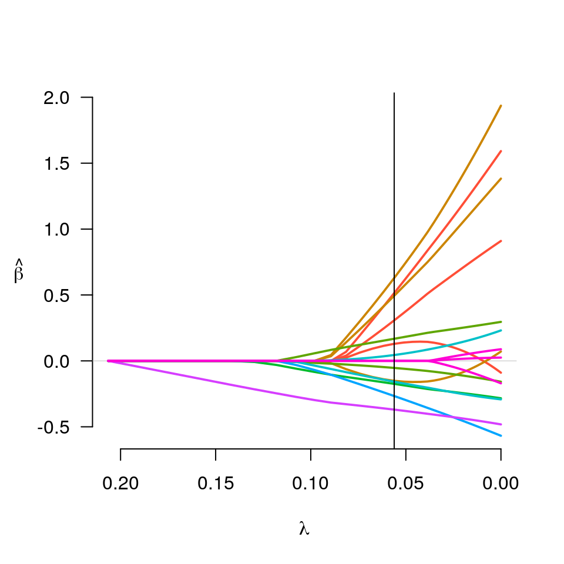

select-grpreg.RdSelects a point along the regularization path of a fitted grpreg object according to the AIC, BIC, or GCV criteria.
select(obj,...) # S3 method for grpreg select(obj, criterion=c("BIC", "AIC", "GCV", "AICc", "EBIC"), df.method=c("default","active"), smooth=FALSE, ...)
| obj | A fitted grpreg object. |
|---|---|
| criterion | The criterion by which to select the regularization
parameter. One of |
| df.method | How should effective model parameters be calculated?
One of: |
| smooth | Applies a smoother to the information criteria before selecting the optimal value. |
| ... | For S3 method compatibility. |
The criteria are defined as follows, where \(L\) is the deviance (i.e, -2 times the log-likelihood), \(\nu\) is the degrees of freedom, and \(n\) is the sample size:
$$AIC = L + 2\nu$$ $$BIC = L + \log(n)\nu$$ $$GCV = \frac{L}{(1-\nu/n)^2}$$ $$AICc = AIC + 2\frac{\nu(\nu+1)}{n-\nu-1}$$ $$EBIC = BIC + 2 \log{p \choose \nu}$$
A list containing:
The selected value of the regularization parameter,
lambda.
The vector of coefficients at the chosen value of
lambda.
The effective number of model parameters at the chosen value
of lambda.
A vector of the calculated model selection criteria for each point on the regularization path.
grpreg
data(Birthwt) X <- Birthwt$X y <- Birthwt$bwt group <- Birthwt$group fit <- grpreg(X, y, group, penalty="grLasso") select(fit)#> $beta #> (Intercept) age1 age2 age3 lwt1 lwt2 #> 3.02536524 0.12945631 0.51415003 0.30726166 0.62868704 -0.15121567 #> lwt3 white black smoke ptl1 ptl2m #> 0.49385428 0.16776254 -0.05345302 -0.17442566 -0.15785358 0.04441707 #> ht ui ftv1 ftv2 ftv3m #> -0.26670074 -0.36973445 0.00000000 0.00000000 0.00000000 #> #> $lambda #> [1] 0.05613761 #> #> $df #> [1] 7.802936 #> #> $IC #> [1] 426.4719 424.3328 422.5671 421.1159 419.9288 418.7393 417.4156 414.7527 #> [9] 412.1531 410.0387 408.2984 407.0545 406.2688 405.8647 405.7733 405.9338 #> [17] 406.2932 406.8058 407.4328 408.8683 410.5842 412.2879 413.9583 415.5797 #> [25] 417.1405 418.6325 420.0505 421.3916 422.6544 423.8392 424.9472 425.9806 #> [33] 426.9421 427.8346 428.6616 429.4265 430.1331 430.7847 431.3851 431.9377 #> [41] 432.4457 432.9124 433.3408 433.7338 434.0940 434.4240 434.7262 435.0029 #> [49] 435.2559 435.4874 435.6990 435.8924 436.0691 436.2306 436.3780 436.5126 #> [57] 436.6355 436.7477 436.8501 436.9435 437.0287 437.1064 437.1774 437.2420 #> [65] 437.3010 437.3548 437.4039 437.4486 437.4894 437.5265 437.5604 437.5913 #> [73] 437.6195 437.6452 437.6685 437.6899 437.7093 437.7270 437.7432 437.7579 #> [81] 437.7713 437.7835 437.7946 437.8048 437.8140 437.8225 437.8302 437.8371 #> [89] 437.8435 437.8493 437.8546 437.8595 437.8639 437.8679 437.8715 437.8748 #> [97] 437.8779 437.8806 437.8831 437.8854 #>select(fit,crit="AIC",df="active")#> Warning: minimum lambda selected for grLasso#> $beta #> (Intercept) age1 age2 age3 lwt1 lwt2 #> 3.04927431 -0.08976451 1.59151760 0.90968052 1.93600738 0.07121398 #> lwt3 white black smoke ptl1 ptl2m #> 1.38273076 0.29582051 -0.15808854 -0.28371611 -0.29193287 0.23107109 #> ht ui ftv1 ftv2 ftv3m #> -0.56800347 -0.48190866 0.08817371 0.02497665 -0.17027810 #> #> $lambda #> [1] 2.064955e-05 #> #> $df #> [1] 18 #> #> $IC #> 0.2065 0.1882 0.1714 0.1562 0.1423 0.1297 0.1182 0.1077 #> 419.9884 419.3837 417.1936 415.3559 413.8165 414.1508 412.1160 417.1816 #> 0.0981 0.0894 0.0814 0.0742 0.0676 0.0616 0.0561 0.0512 #> 411.8883 412.8994 413.0615 407.4569 402.6136 398.4455 394.8722 391.8192 #> 0.0466 0.0425 0.0387 0.0353 0.0321 0.0293 0.0267 0.0243 #> 389.2187 387.0097 385.1378 389.3600 387.7910 386.4642 385.3446 384.4016 #> 0.0221 0.0202 0.0184 0.0167 0.0153 0.0139 0.0127 0.0115 #> 383.6086 382.9427 382.3843 381.9166 381.5251 381.1978 380.9244 380.6961 #> 0.0105 0.0096 0.0087 0.008 0.0073 0.0066 0.006 0.0055 #> 380.5056 380.3468 380.2144 380.1040 380.0121 379.9357 379.8720 379.8190 #> 0.005 0.0046 0.0041 0.0038 0.0034 0.0031 0.0029 0.0026 #> 379.7749 379.7382 379.7077 379.6823 379.6612 379.6437 379.6291 379.6170 #> 0.0024 0.0022 0.002 0.0018 0.0016 0.0015 0.0014 0.0012 #> 379.6069 379.5986 379.5916 379.5858 379.5810 379.5770 379.5738 379.5710 #> 0.0011 0.001 9e-04 9e-04 8e-04 7e-04 6e-04 6e-04 #> 379.5687 379.5668 379.5652 379.5639 379.5628 379.5619 379.5612 379.5606 #> 5e-04 5e-04 4e-04 4e-04 4e-04 3e-04 3e-04 3e-04 #> 379.5601 379.5596 379.5593 379.5590 379.5587 379.5585 379.5584 379.5582 #> 3e-04 2e-04 2e-04 2e-04 2e-04 2e-04 1e-04 1e-04 #> 379.5581 379.5580 379.5579 379.5579 379.5578 379.5578 379.5577 379.5577 #> 1e-04 1e-04 1e-04 1e-04 1e-04 1e-04 1e-04 1e-04 #> 379.5577 379.5576 379.5576 379.5576 379.5576 379.5576 379.5576 379.5576 #> 1e-04 1e-04 0 0 0 0 0 0 #> 379.5576 379.5575 379.5575 379.5575 379.5575 379.5575 379.5575 379.5575 #> 0 0 0 0 #> 379.5575 379.5575 379.5575 379.5575 #>plot(fit)